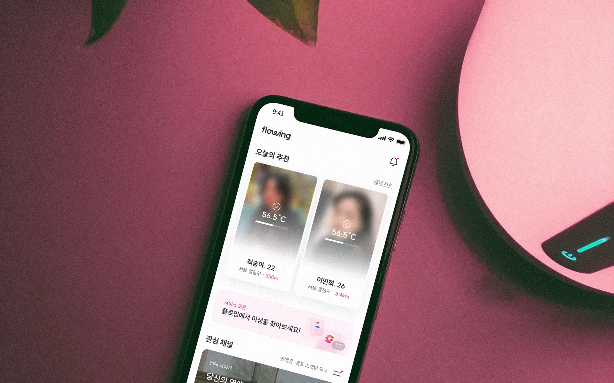
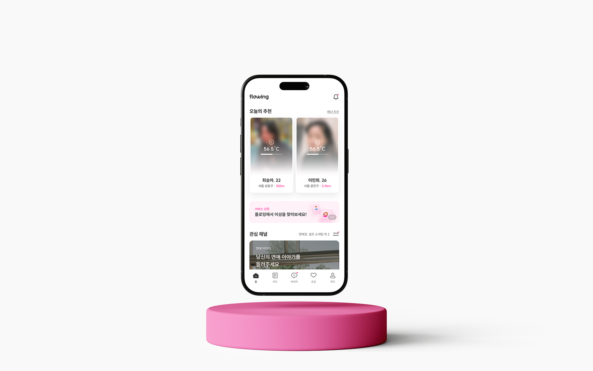
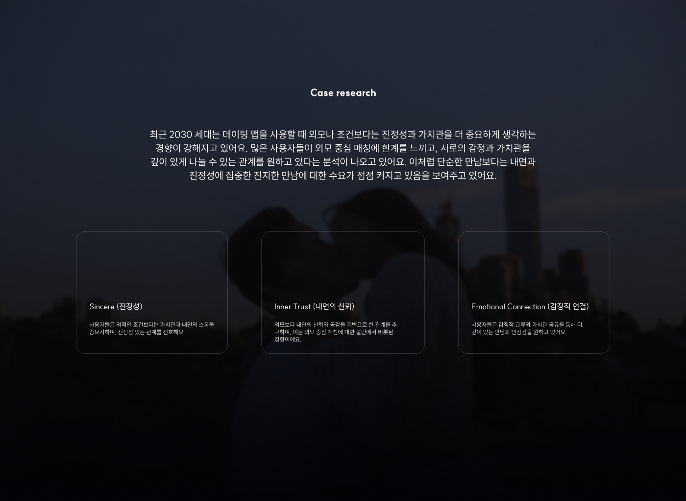
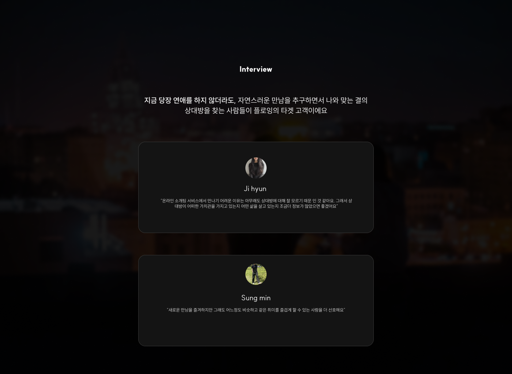
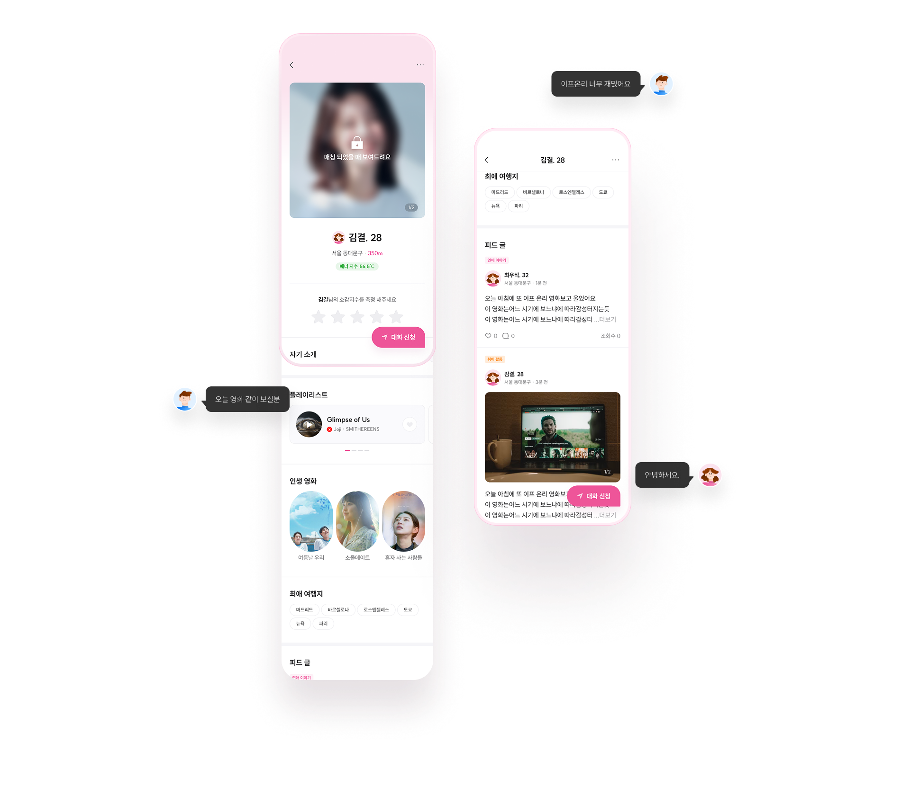
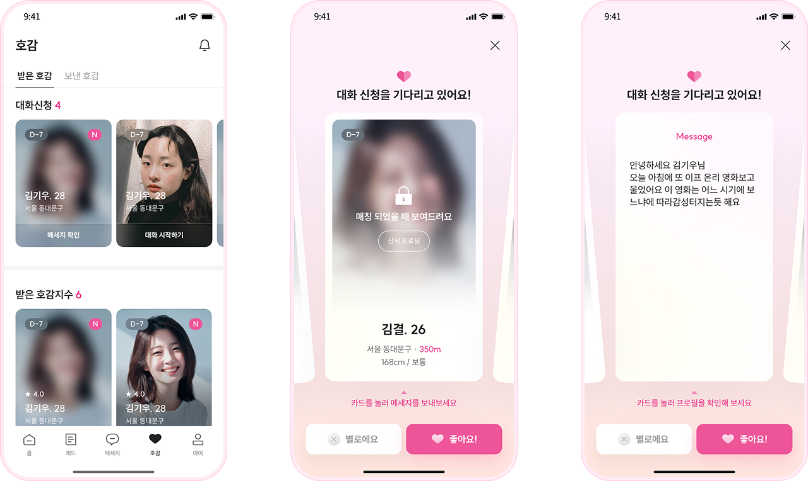

PM · UX Research · Service Planning
사진이 아닌, 가치관이 만나는 서비스

01 — Overview
플로잉은 가치관 기반 매칭을 중심에 두고 설계한 소개팅 웹서비스예요. 프로필 사진보다 '어떤 사람인지'를 먼저 보여주는 구조로 기획했어요.
팀 프로젝트로 PM 역할을 맡았고, 기획과 UX 전반을 담당했어요. 리서치부터 와이어프레임까지 혼자 진행했어요.

02 — Background
가설은 '현재 소개팅 앱에 불만족하는 사람이 많을 것'이었어요. 직접 여러 명을 인터뷰하면서 공통적으로 나온 이야기는 외모나 조건 중심 매칭의 피로감이었어요. 연애보다 먼저 '결이 맞는 사람인지'를 알고 싶다는 니즈가 반복됐어요.
이 지점이 플로잉의 방향을 잡는 데 핵심이었어요. 매칭 속도보다 매칭의 질을 높이는 구조, 즉 상대를 먼저 알고 나서 연결을 시작하는 흐름을 설계하기로 했어요.
Sincere
외적인 조건보다 가치관과 내면을 먼저 알고 싶다는 니즈. 인터뷰에서 가장 자주 나온 키워드였어요.
Inner Trust
상대를 모른 채로 연결되는 것에 대한 불안감. 외모 중심 매칭의 피로감이 이 방향으로 이어졌어요.
Emotional Connection
같이 있으면 즐거울 것 같은 사람을 먼저 알고 싶다는 감각. 연애보다 연결이 우선이라는 인식이에요.
03 — Research
리서치에서 만난 사람들의 공통점은 '빠른 매칭'보다 '맞는 사람'을 원한다는 거였어요. 연애 의지와 관계없이, 나와 비슷하게 생각하는 사람을 자연스럽게 발견하고 싶다는 니즈가 플로잉의 기획 방향을 잡는 데 핵심적이었어요.
Ji hyun
"온라인 소개팅 서비스에서 만나기 어려운 이유는 상대방에 대해 잘 모르기 때문인 것 같아요. 어떤 가치관을 가지고 있는지, 어떤 삶을 살고 있는지 정보가 더 많았으면 좋겠어요."
Sung min
"새로운 만남을 즐겨하지만, 어느 정도 비슷하고 같은 취미를 즐겁게 할 수 있는 사람을 더 선호해요."
"외모가 아니라 '이 사람과 같이 있으면 즐거울까?'를
먼저 알고 싶다."
User Research Insight


04 — Key Design
프로필 사진을 먼저 보여주는 대신, 일상과 가치관이 담긴 피드를 먼저 탐색하도록 구조를 잡았어요. 관심이 생기면 그때 프로필로 들어가고, 마음에 들면 채팅을 신청할 수 있어요.
외모가 아니라 일상이 연결의 시작점이 되도록 하는 게 핵심 설계 의도였어요. 첫 인상보다 먼저 '이 사람과 이야기하고 싶다'는 감각을 만들고 싶었어요.

05 — Wireframes
핵심 여정을 3단계로 단순하게 잡았어요. 복잡한 필터 설정 없이, 피드를 보다가 끌리는 게 있으면 프로필을 확인하고, 채팅을 신청하는 구조예요. 흐름이 끊기지 않도록 매 단계를 이어붙이는 데 신경을 많이 썼어요.

06 — Reflection
피드 기반 탐색 구조 자체는 지금도 맞다고 생각해요. 프로필 사진 대신 일상과 가치관이 담긴 피드를 먼저 보여주는 것, 관심이 생기면 그때 프로필로 들어가는 순서. 인터뷰에서 확인한 니즈와 정확히 맞아요.
다만 '가치관을 피드에서 어떻게 표현하게 할 것인가'라는 질문을 구체적으로 풀지 못했어요. 피드에 무엇을 올리게 하는지, 어떤 형식으로 보여주는지가 서비스 경험의 핵심인데, 와이어프레임에서 그 부분이 명확하지 않아요. 다음 단계로 프로토타입과 실제 사용자 테스트가 필요한 이유예요.